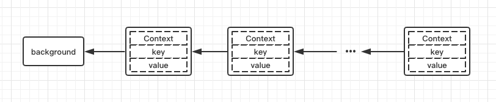
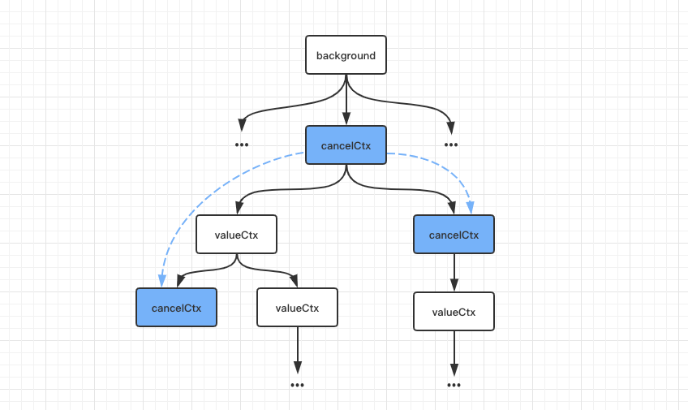

前言
这篇文章将介绍Golang并发编程中常用到一种编程模式：context。本文将从为什么需要context出发，深入了解context的实现原理，以及了解如何使用context。
为什么需要context
在并发程序中，由于超时、取消操作或者一些异常情况，往往需要进行抢占操作或者中断后续操作。熟悉channel的朋友应该都见过使用done channel来处理此类问题。比如以下这个例子：
1 | func main() { |
上述例子中定义了一个buffer为0的channel done, 子协程运行着定时任务。如果主协程需要在某个时刻发送消息通知子协程中断任务退出，那么就可以让子协程监听这个done channel，一旦主协程关闭done channel，那么子协程就可以推出了，这样就实现了主协程通知子协程的需求。这很好，但是这也是有限的。
如果我们可以在简单的通知上附加传递额外的信息来控制取消：为什么取消，或者有一个它必须要完成的最终期限，更或者有多个取消选项，我们需要根据额外的信息来判断选择执行哪个取消选项。
考虑下面这种情况：假如主协程中有多个任务1, 2, …m，主协程对这些任务有超时控制；而其中任务1又有多个子任务1, 2, …n，任务1对这些子任务也有自己的超时控制，那么这些子任务既要感知主协程的取消信号，也需要感知任务1的取消信号。
如果还是使用done channel的用法，我们需要定义两个done channel，子任务们需要同时监听这两个done channel。嗯，这样其实好像也还行哈。但是如果层级更深，如果这些子任务还有子任务，那么使用done channel的方式将会变得非常繁琐且混乱。
我们需要一种优雅的方案来实现这样一种机制：
- 上层任务取消后，所有的下层任务都会被取消；
- 中间某一层的任务取消后，只会将当前任务的下层任务取消，而不会影响上层的任务以及同级任务。
这个时候context就派上用场了。我们首先看看context的结构设计和实现原理。
context是什么
context接口
先看Context接口结构，看起来非常简单。1
2
3
4
5
6
7
8
9
10type Context interface {
Deadline() (deadline time.Time, ok bool)
Done() <-chan struct{}
Err() error
Value(key interface{}) interface{}
}
Context接口包含四个方法：
Deadline返回绑定当前context的任务被取消的截止时间；如果没有设定期限，将返回 ok == false。Done当绑定当前context的任务被取消时，将返回一个关闭的channel；如果当前context不会被取消，将返回nil。Err如果Done返回的channel没有关闭，将返回nil;如果Done返回的channel已经关闭，将返回非空的值表示任务结束的原因。如果是context被取消，Err将返回Canceled；如果是context超时，Err将返回DeadlineExceeded。Value返回context存储的键值对中当前key对应的值，如果没有对应的key,则返回nil。
可以看到Done方法返回的channel正是用来传递结束信号以抢占并中断当前任务；Deadline方法指示一段时间后当前goroutine是否会被取消；以及一个Err方法，来解释goroutine被取消的原因；而Value则用于获取特定于当前任务树的额外信息。而context所包含的额外信息键值对是如何存储的呢？其实可以想象一颗树，树的每个节点可能携带一组键值对, 如果当前节点上无法找到key所对应的值，就会向上去父节点里找，直到根节点，具体后面会说到。
再来看看context包中的其他关键内容。
emptyCtx
emptyCtx是一个int类型的变量，但实现了context的接口。emptyCtx没有超时时间，不能取消，也不能存储任何额外信息，所以emptyCtx用来作为context树的根节点。1
2
3
4
5
6
7
8
9
10
11
12
13
14
15
16
17
18
19
20
21
22
23
24
25
26
27
28
29
30
31
32
33
34
35
36
37
38
39
40
41
42// An emptyCtx is never canceled, has no values, and has no deadline. It is not
// struct{}, since vars of this type must have distinct addresses.
type emptyCtx int
func (*emptyCtx) Deadline() (deadline time.Time, ok bool) {
return
}
func (*emptyCtx) Done() <-chan struct{} {
return nil
}
func (*emptyCtx) Err() error {
return nil
}
func (*emptyCtx) Value(key interface{}) interface{} {
return nil
}
func (e *emptyCtx) String() string {
switch e {
case background:
return "context.Background"
case todo:
return "context.TODO"
}
return "unknown empty Context"
}
var (
background = new(emptyCtx)
todo = new(emptyCtx)
)
func Background() Context {
return background
}
func TODO() Context {
return todo
}
但我们一般不会直接使用emptyCtx，而是使用由emptyCtx实例化的两个变量，分别可以通过调用Background和TODO方法得到，但这两个context在实现上是一样的。那么Background和TODO方法得到的context有什么区别呢？可以看一下官方的解释：
1 | // Background returns a non-nil, empty Context. It is never canceled, has no |
Background和TODO只是用于不同场景下：Background通常被用于主函数、初始化以及测试中，作为一个顶层的context，也就是说一般我们创建的context都是基于Background；而TODO是在不确定使用什么context的时候才会使用。
下面将介绍两种不同功能的基础context类型：valueCtx和cancelCtx。
valueCtx
valueCtx结构体
1 | type valueCtx struct { |
valueCtx利用一个Context类型的变量来表示父节点context，所以当前context继承了父context的所有信息；valueCtx类型还携带一组键值对，也就是说这种context可以携带额外的信息。valueCtx实现了Value方法，用以在context链路上获取key对应的值，如果当前context上不存在需要的key,会沿着context链向上寻找key对应的值，直到根节点。
WithValue
WithValue用以向context添加键值对：
1 | func WithValue(parent Context, key, val interface{}) Context { |
这里添加键值对不是在原context结构体上直接添加，而是以此context作为父节点，重新创建一个新的valueCtx子节点，将键值对添加在子节点上，由此形成一条context链。获取value的过程就是在这条context链上由尾部上前搜寻：

cancelCtx
cancelCtx结构体
1 | type cancelCtx struct { |
跟valueCtx类似，cancelCtx中也有一个context变量作为父节点；变量done表示一个channel，用来表示传递关闭信号；children表示一个map，存储了当前context节点下的子节点；err用于存储错误信息表示任务结束的原因。
再来看一下cancelCtx实现的方法：
1 | func (c *cancelCtx) Done() <-chan struct{} { |
可以发现cancelCtx类型变量其实也是canceler类型，因为cancelCtx实现了canceler接口。Done方法和Err方法没必要说了，cancelCtx类型的context在调用cancel方法时会设置取消原因，将done channel设置为一个关闭channel或者关闭channel，然后将子节点context依次取消，如果有需要还会将当前节点从父节点上移除。
WithCancel
WithCancel函数用来创建一个可取消的context，即cancelCtx类型的context。WithCancel返回一个context和一个CancelFunc，调用CancelFunc即可触发cancel操作。直接看源码：
1 | type CancelFunc func() |
之前说到cancelCtx取消时，会将后代节点中所有的cancelCtx都取消，propagateCancel即用来建立当前节点与祖先节点这个取消关联逻辑。
- 如果
parent.Done()返回nil，表明父节点以上的路径上没有可取消的context，不需要处理； - 如果在
context链上找到到cancelCtx类型的祖先节点，则判断这个祖先节点是否已经取消，如果已经取消就取消当前节点；否则将当前节点加入到祖先节点的children列表。 - 否则开启一个协程，监听
parent.Done()和child.Done()，一旦parent.Done()返回的channel关闭，即context链中某个祖先节点context被取消，则将当前context也取消。
这里或许有个疑问，为什么是祖先节点而不是父节点？这是因为当前context链可能是这样的：

当前cancelCtx的父节点context并不是一个可取消的context，也就没法记录children。
timerCtx
timerCtx是一种基于cancelCtx的context类型，从字面上就能看出，这是一种可以定时取消的context。
1 | type timerCtx struct { |
timerCtx内部使用cancelCtx实现取消，另外使用定时器timer和过期时间deadline实现定时取消的功能。timerCtx在调用cancel方法，会先将内部的cancelCtx取消，如果需要则将自己从cancelCtx祖先节点上移除，最后取消计时器。
WithDeadline
WithDeadline返回一个基于parent的可取消的context，并且其过期时间deadline不晚于所设置时间d。
1 | func WithDeadline(parent Context, d time.Time) (Context, CancelFunc) { |
- 如果父节点
parent有过期时间并且过期时间早于给定时间d，那么新建的子节点context无需设置过期时间，使用WithCancel创建一个可取消的context即可； - 否则，就要利用
parent和过期时间d创建一个定时取消的timerCtx，并建立新建context与可取消context祖先节点的取消关联关系，接下来判断当前时间距离过期时间d的时长dur：- 如果
dur小于0，即当前已经过了过期时间，则直接取消新建的timerCtx，原因为DeadlineExceeded； - 否则，为新建的
timerCtx设置定时器，一旦到达过期时间即取消当前timerCtx。
- 如果
WithTimeout
与WithDeadline类似，WithTimeout也是创建一个定时取消的context，只不过WithDeadline是接收一个过期时间点，而WithTimeout接收一个相对当前时间的过期时长timeout:
1 | func WithTimeout(parent Context, timeout time.Duration) (Context, CancelFunc) { |
context的使用
首先使用context实现文章开头done channel的例子来示范一下如何更优雅实现协程间取消信号的同步：
1 | func main() { |
这个例子中，只要让子线程监听主线程传入的ctx，一旦ctx.Done()返回空channel，子线程即可取消执行任务。但这个例子还无法展现context的传递取消信息的强大优势。
阅读过net/http包的朋友可能注意到在实现http server时就用到了context, 下面简单分析一下。
1、首先Server在开启服务时会创建一个valueCtx,存储了server的相关信息，之后每建立一条连接就会开启一个协程，并携带此valueCtx。1
2
3
4
5
6
7
8
9
10
11
12
13
14
15
16
17
18func (srv *Server) Serve(l net.Listener) error {
...
var tempDelay time.Duration // how long to sleep on accept failure
baseCtx := context.Background() // base is always background, per Issue 16220
ctx := context.WithValue(baseCtx, ServerContextKey, srv)
for {
rw, e := l.Accept()
...
tempDelay = 0
c := srv.newConn(rw)
c.setState(c.rwc, StateNew) // before Serve can return
go c.serve(ctx)
}
}
2、建立连接之后会基于传入的context创建一个valueCtx用于存储本地地址信息，之后在此基础上又创建了一个cancelCtx，然后开始从当前连接中读取网络请求，每当读取到一个请求则会将该cancelCtx传入，用以传递取消信号。一旦连接断开，即可发送取消信号，取消所有进行中的网络请求。
1 | func (c *conn) serve(ctx context.Context) { |
3、读取到请求之后，会再次基于传入的context创建新的cancelCtx,并设置到当前请求对象req上，同时生成的response对象中cancelCtx保存了当前context取消方法。
1 | func (c *conn) readRequest(ctx context.Context) (w *response, err error) { |
这样处理的目的主要有以下几点：
一旦请求超时，即可中断当前请求；
在处理构建
response过程中如果发生错误，可直接调用response对象的cancelCtx方法结束当前请求；在处理构建
response完成之后，调用response对象的cancelCtx方法结束当前请求。
在整个server处理流程中，使用了一条context链贯穿Server、Connection、Request，不仅将上游的信息共享给下游任务，同时实现了上游可发送取消信号取消所有下游任务，而下游任务自行取消不会影响上游任务。
总结
context主要用于父子任务之间的同步取消信号，本质上是一种协程调度的方式。另外在使用context时有两点值得注意：上游任务仅仅使用context通知下游任务不再需要，但不会直接干涉和中断下游任务的执行，由下游任务自行决定后续的处理操作，也就是说context的取消操作是无侵入的；context是线程安全的，因为context本身是不可变的（immutable），因此可以放心地在多个协程中传递使用。
参考资料
2、Go Concurrency Patterns: Context
3、Understanding the context package in golang